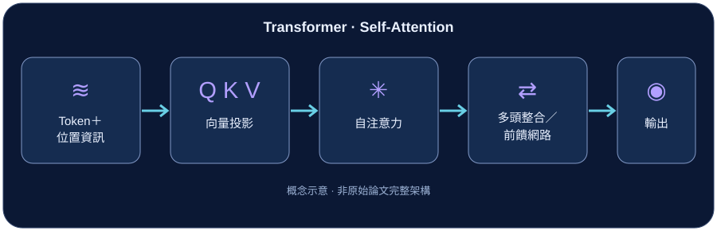

01 · 技術介紹
Transformer 是由 Vaswani 等人在 2017 年提出的神經網路架構，原始研究以注意力機制處理序列轉換任務，不再依賴循環或卷積作為主要序列建模方式。
Transformer 已廣泛成為多種文字模型的架構基礎；但不同現代模型可能只採用編碼器、只採用解碼器，或採用其他變體。
02 · 核心概念
閱讀一句話時，理解某個詞通常需要參考句子中的其他詞。Self-Attention（自注意力）就是讓序列中各位置能依照相關程度，整合其他位置的資訊。
- Token：輸入序列的基本單位。
- Query、Key、Value（Q/K/V）：計算注意力時使用的三組向量表示。
- 多頭注意力（Multi-Head Attention）：讓模型透過不同的注意力頭，學習多種關聯模式。
03 · 技術原理
Scaled Dot-Product Attention
每個位置產生 Query、Key、Value；透過 Query 與 Key 的相似程度計算分數、經縮放與 Softmax 後，再對 Value 做加權整合。常見寫法為：
Attention(Q, K, V) = softmax(QKᵀ / √dₖ) V
因為注意力運算本身不會自動保留輸入順序，Transformer 需要位置資訊（例如位置編碼）。原始模型也使用前饋網路、殘差連接及正規化等組件。
04 · 運作流程

- 輸入序列：將文字轉為 Token 表示並加入位置資訊。
- 注意力計算：使用 Q/K/V 衡量位置間的相關程度。
- 特徵整合：多頭注意力與前饋網路更新每個位置的表示。
- 任務輸出：依模型設計進行分類、理解或逐步生成內容。
05 · 實際應用
- 自然語言處理：摘要、翻譯、問答與文字生成。
- 影像領域：Vision Transformer 將影像切成 patch 進行表示學習。
- 多模態系統：整合文字、影像等不同形式的資訊。
注意力模型仍可能受資料品質、上下文長度與計算成本限制。
06 · 重點整理
- Transformer 的關鍵機制是自注意力，用以整合不同位置資訊。
- Q、K、V 用來計算資訊應如何被加權。
- 位置資訊使模型能辨別序列的順序。
- 原始 Transformer 與現代各式 Transformer 變體，結構不一定完全相同。
參考資料
下列連結提供進一步查證的官方資料及論文；本文為入門性教學整理，流程圖為本站自繪概念示意。